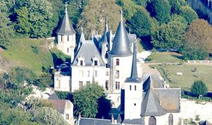
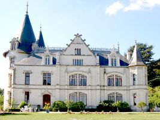
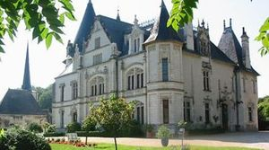

Recensement Jean-Claude Truffet
| Département | 37 — Indre-et-Loire |
| Canton | Montlouis-sur-Loire |
| Commune | Veretz |
| Type d'édifice | Château |
| Période d'origine | XV-XVI |



VERETZ, la propriété passe à la famille Coron au XIIIe siècle, puis en 1320 à Guillaume Trousseau. La position du château de Véretz était excellente et tenta les Anglais envahisseurs, qui sen emparèrent, mais l'occupation prit fin au traité de Brétigny en 1360. En 1361, le château est démantelé. Au plus fort de la guerre de Cent Ans, le seigneur de Véretz, est un puissant personnage dont le nom se trouve associé à celui de Du Guesclin. En 1407, le château appartient à Jean de LIsle qui trouvera la mort à Azincourt en 1415. La Touraine est à nouveau occupée en 1424 et le nouveau seigneur de Véretz, Hugues de Châlons, Comte de Tonnerre, meurt aussi au combat. Sa veuve épouse Georges de la Trémoille, lieutenant général des Armées. A cette époque "lhostel noble de Véretz" présente laspect dune maison un peu ruinée.Les Trémoille n'habitent pas à Véretz, lui préférant le château de Thouars. Jean de la Barre en hérite vers 1500, il sert les rois Louis XI et Charles VIII. Il fait construire à Véretz une demeure digne de sa haute situation. Jean de la Barre suit François Ier dans sa captivité à Madrid. Il meurt à Paris en 1534. Véretz reste à ses descendants jusquen 1595, date à laquelle le domaine est acquis par une vieille famille de Touraine, les Forget.
VERETZ, Pierre Forget continua les constructions et acheta un grand nombre de terres nouvelles. A sa mort, Véretz passe dans lindivision puis entre dans le patrimoine des Bouthillier de Rancé en 1637, famille proche du Cardinal de Richelieu. LAbbé de Rancé en hérite avec son frère à la mort de monsieur de Rancé en 1653. En 1661, la propriété est vendue à lAbbé dEffiat et au duc de Mazarin. Par mariages successifs, la terre de Véretz échoit au marquis Armand Louis de Richelieu, qui, après son éclatant mariage avec Anne de Crussol en 1718, obtient du Roi le titre de duc dAiguillon. Durant la Révolution, le duc émigre. Sous la Convention, les communs servent dabord de casernement à la troupe, ensuite il est procédé à laliénation pure et simple du domaine. Acquis pour presque rien par quelques citoyens de Tours, le château de Véretz est détruit et dépecé malgré les protestations dun certain Huet de Tours. En 1836, le comte de Richemont rachète une grande partie de la propriété et fait reconstruire un château sur lemplacement de lancienne demeure. En 1878, madame Drake del Castillo rachète Véretz au comte de Richemont, puis par héritage, le château passe aux familles Lenglart et de Maintenant.
Jean de la Barre famille Coron
"